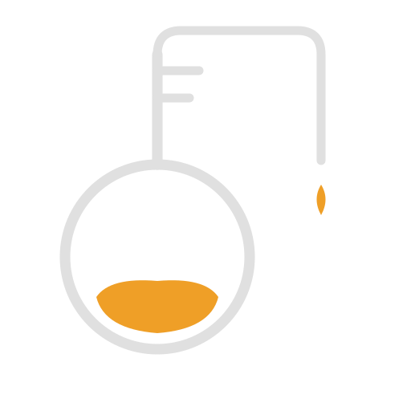

Team Knowledge, Distilled
A team knowledge base powered by Claude Code
Knowledge gets created, then lost. Decisions get relitigated. New hires ramp slower.
The problem isn't generating knowledge. It's retaining it.
Knowledge flows from where work happens — no context switching
LLM auto-classifies entries with confidence scoring and team review
Semantic search and multi-entry synthesis — not keyword matching
Capture knowledge where work happens. Retrieve it when you need it.
| Skill | Purpose | Example |
|---|---|---|
| /distill | Capture session knowledge | /distill "We chose Redis for caching" |
| /recall | Semantic search | /recall distributed caching strategies |
| /pour | Multi-entry synthesis | /pour how does our auth system work? |
| /bookmark | Save URLs with summaries | /bookmark https://... #caching |
| /minutes | Meeting notes + updates | /minutes --update standup-2026-03-22 |
| /classify | Classify & triage queue | /classify --inbox |
| /watch | Manage feed sources | /watch add github:duckdb/duckdb |
| /radar | Ambient digest + suggestions | /radar --days 7 |
| /tune | Adjust relevance thresholds | /tune --digest 0.40 |
| /setup | Onboarding wizard | /setup |
Direct connection to https://distillery-mcp.fly.dev/mcp
Multi-pass retrieval builds the complete picture
Keeps the knowledge base clean as it grows
"This is already captured. Don't store."
"Overlaps with existing entry. Merge new details in?"
"Related content exists. Store and cross-reference."
"Novel knowledge. Store as new entry."
LLM-powered type assignment with team review for low confidence
Every entry gets one of 12 types (session, bookmark, minutes, meeting, reference, idea, inbox, person, project, digest, github, feed) with a confidence score.
Confidence ≥ 60% → Active
Confidence < 60% → Review Queue
Low-confidence entries enter a triage queue. Any team member can approve, reclassify, or archive.
Skills are markdown
SKILL.md files, not code
Storage is swappable
DuckDB now, ES later
Embeddings are configurable
Jina v3, OpenAI, or stub
Connect your team via HTTP + GitHub OAuth
GitHub OAuth
FastMCP GitHubProvider
OAuth 2.1 + PKCE
Shared storage
MotherDuck (md:)
or S3-backed DuckDB
stdio unchanged
Local mode works
exactly as before
Note: distillery-mcp.fly.dev is a demo server — do not store sensitive data. Deploy your own instance for production use.
claude plugin install)| /whois | Evidence-backed expertise map |
| /investigate | Deep domain context builder |
| /digest | Team activity summaries |
| /briefing | Team knowledge dashboard |
| /process | Batch classify + stale detection |
| /gh-sync | GitHub issue/PR tracking |
Refine raw information into concentrated team knowledge.
Start capturing knowledge where work happens. No separate app. No context switching.
Deploy for a single user in minutes. Scale to your team when ready.
Install
claude plugin install distillery
Get Started
/setup
Documentation